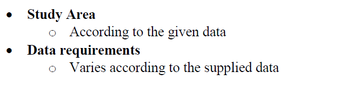
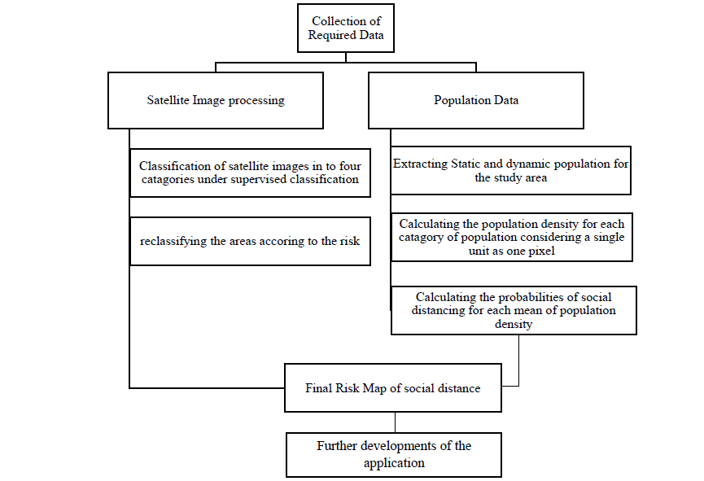
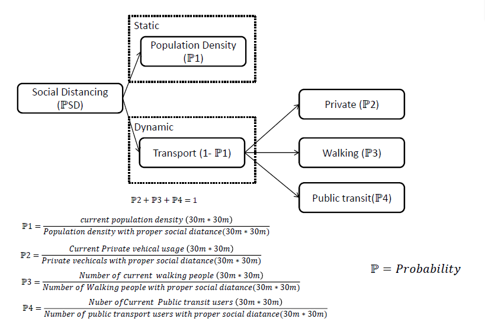
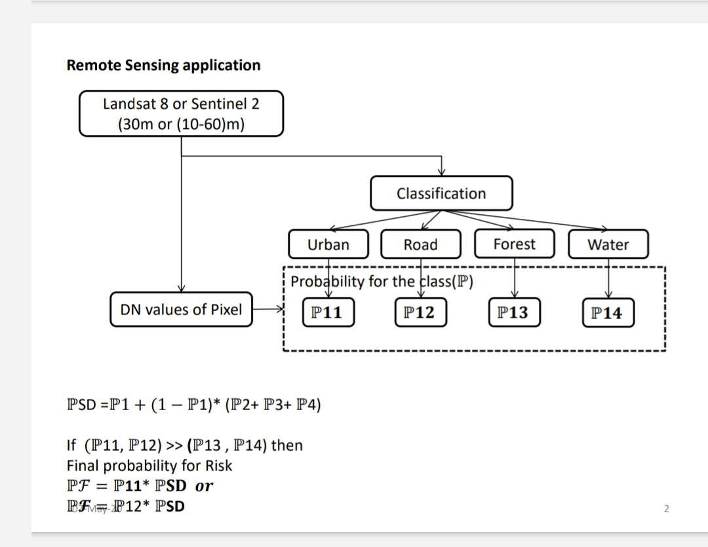
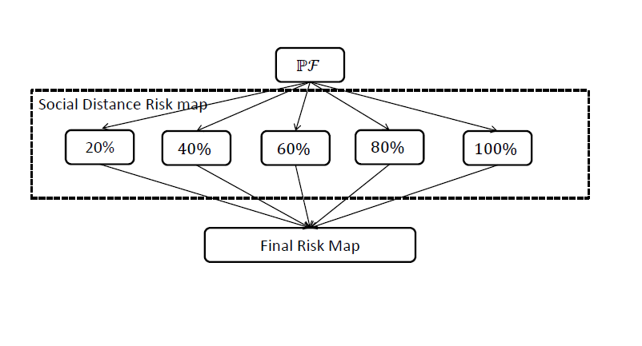
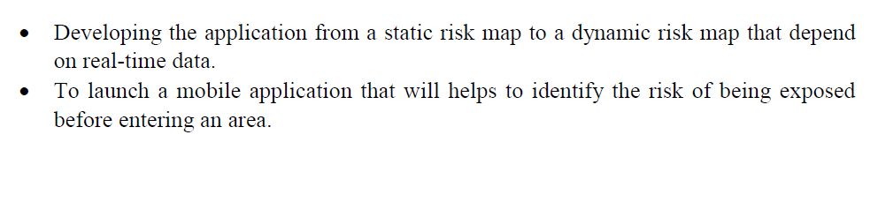

About the research
IntroductionChallenge – Human Factors
“The emerge and spread of infectious diseases, like COVID-19 are on the rise. Can you identify patterns between population density and COVID-19 cases and identify factors that could predict hotspots of disease spread.” Coronavirus disease 2019 (COVID-19) is a pandemic that is circulating all around the earth which was considered to be initially identified in December 2019. It is mainly spreading through human beings as from a close contact between people. This virus is transmitting often via small droplets produced by sneezing, coughing and talking.
To avoid the spreading of this virus, World health organization had implemented measures to be followed by the people to get rid of the virus such as, regularly and thorough cleaning of hands with an alcohol-based hand rub or with soap and water, maintaining at least 1 meter (3 feet) distance between the people and Avoiding touching of mouth and face in public. When considering the regulations implemented by the WHO, It is clear that being away from others is the best option that can be taken to prevent from being infected. But being isolated is not a much practical scenario, people must at least get managed to keep the minimum required social distance between them in their day to day life.
RationaleTo make awareness among the individuals about the risk level regarding the social distancing of a specific areas. It might be an advantage if a person can get an idea on the risk of exposing regarding the social distancing factor before entering to an area.
Methodology

  
Python Codes# Import arcpy module
import arcpy
# Local variables:
lka_ppp_2020_tif = "lka_ppp_2020.tif"
Galle_Matara = "Galle_Matara"
Population_Southern_tif = "C:\\Users\\HP\\Desktop\\Projects\\SpaceApp\\New folder\\Population_Southern.tif"
Risk_Map_tif = "C:\\Users\\HP\\Desktop\\Projects\\SpaceApp\\New folder\\Risk_Map.tif"
# Process: Clip
arcpy.Clip_management(lka_ppp_2020_tif, "79.9861591350014 5.91815783273727 80.7226652336149 6.44000122898748", Population_Southern_tif, Galle_Matara, "-9.999900e+004", "ClippingGeometry", "MAINTAIN_EXTENT")
# Process: Raster Calculator
arcpy.gp.RasterCalculator_sa("Float(Float((\"%Population_Southern.tif%\")/10000)*12.9275)", Risk_Map_tif)
Beta Output
Further Developments